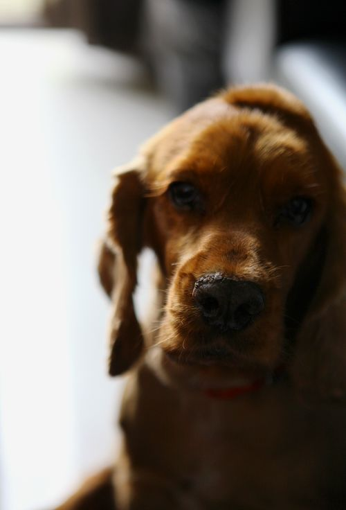
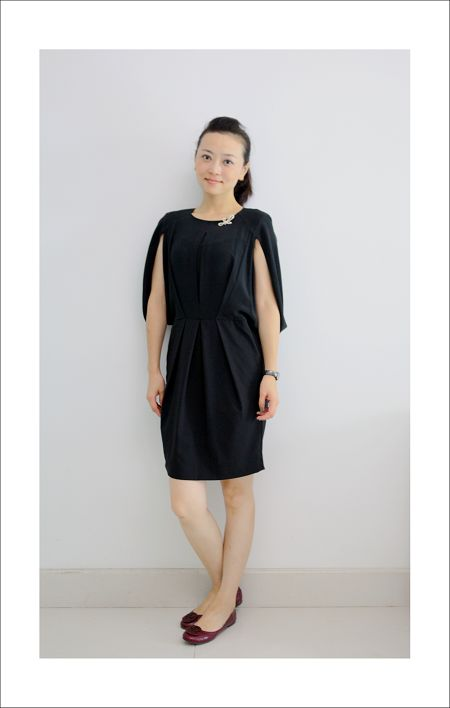

Archives : 2011-08
平淡无奇的日子。 @ Aug 31, 2011

明天终于到星期四了，小周末。
晚饭后泡了壶太湖翠竹，吃水果，看《康熙来了》。
娱乐之后出门遛狗散步。
今天网购了三种棉布料和一台电动缝纫机，准备为狗狗们缝制可拆洗的窝里的垫套。之前缝一针一线手工缝制了两个垫套，挺耗时间。我妈妈有一台70年代老式脚踏缝纫机，可以进博物馆了，但她还在使用。我无法手脚并用的使用它，电动的也好，也能体验缝纫乐趣。
温柔的眼神。 @ Aug 31, 2011
look，已经大病痊愈的小可爱。

开饭前。 @ Aug 24, 2011
LUKE：“象所有小朋友一样爱吃肯德基，尤其是吮指原味鸡块，虽然俺嘴角挂着口水，但是开饭前俺还是很有耐心与克制力的，况且吃饭这件事马虎不得，值得严肃对待。”



DRESS BLOG @ Aug 24, 2011
今天已经有人穿上了长袖，更有甚者还穿了马甲和背心。
天气的确凉爽了许多，但是有那么冷吗？

潜伏经典语录 @ Aug 24, 2011
谢若林篇：
1 乱世就是舞台；
2 你看那些为官的人，嘴上全是主义，心里全是生意；
3 两根金条放在这，你告诉我拿一根是高尚的哪一根是龌龊的？
4 做生意甩开中间人那是不仗义啊？
5 如果你一枪没打死我，我又活过来了，咱俩还能做生意，只要价格公道；
6 你断人家财路，人家会断你生路的；
7 等共军进了城，你们这些歌女舞女的，都得抓去共妻。“不给钱谁共妻！”
8 这未来和平了，就没有主义了，有什么呢？只有钱。
9 怎么就人头落地，哦，我卖西瓜你嫌贵你就杀我？
10 硕果仅存的蠢货。
余则成篇：
1 一个小小的余则成就是路边的一个送行者，你看见了他，他看见了你，我们挥挥手就过去了，再往前就是更有意义的生活；
2 决定权在她手里，别人只是配合；
3 信任是一种滑稽的好感，求之却不得之；
4 我们的敌人是空气，每一个窗户后面都有一双眼睛，每一片树叶后面都有一只耳朵；
5 我们战死的时候，坟头上是鲜花还是狗屎？
6 我没什么信仰，如果说有的话，我信仰良心，信仰生活；
7 做梦也要有纪律；
8 不肖则成，今日大婚，只能掌灯夜烛，无三叩九拜谢恩列位尊堂，无花酒饭菜招待各位乡亲父老，无凤冠霞佩装扮新娘，这一切实属无奈；
9 翠平同志，你不能再抽烟袋了，那样容易暴露；
10 战斗就要打响了，你会回家喂锗吗？
11 老夫老妻照章办事就是了，身体还是党国的。
吴站长篇：
1 躲躲躲，都躲到这儿来了！你们是大肥猪怕宰是不是？
2 蒋宋孔陈家里有多少钱啊，所以他们愿意革命。咱革命是为什么呀？
3 你都长皱纹了，就跟我前列腺经常造反一样。
4 吴：凝聚意志，保卫领袖，这八个字我研究了十五年呢！余：您研究出什么结果了？吴：结果就是人不为己，天诛地灭！
5 本来想露脸，结果把屁股露出来了。
6 不为那点特权，谁愿当官儿啊！
7 把你的脑袋从脚后跟里拿出来再用一次吧！草鸡头上插凤毛，还巡查员呢！
8 活着，过生活！
9 神奇的一跳，正好跳在我的神经上。有点牙疼。
10 没有人情的政治是短命的政治；
11 你们这两个是可以进博物馆的蠢货；
12 时间就像一头野驴，跑起来就不停。
13 所信者听也，而听犹不可信。
曲折人生。 @ Aug 24, 2011
有人在美国花费3万美元生子，有人在HK花费8万人民币生子。今儿新闻里说，父母双方为大陆常驻户口，即使在海外生二胎，也算作超生，罚款25万。武进一户家庭已被处罚。
新闻报道江浦某街道负责拆迁等工作的副主任，被人举报，擅自更改房屋结构。也就是装修过程中，将空间高的房间分隔成多层使用。
从出生到房屋装修问题，貌似所有的曲折人生，无非是路遇一个又一个小人儿，且没能越过或躲过（当然最终还是会过去）。销售的重点是搞定人，人生的重点貌似也是搞定人，不是搞定自己，就是搞定别人。
期待一场美容觉。 @ Aug 23, 2011
展会的征样用了三天时间梳理，总算安排下去，然后轮到我去讨债了。象我这样同时征样的还有6、7个同事，分管不同产品，怎么想都是一份庞大的样品单。每年都有展会，那些展会上的样品回来后不知去处。没有任何交接，于是界界展会需要重新打样，支付样品费，浪费不少。同样的问题也存在于，同一岗位替换人时没有工作上的交接，翻单根据程序记录在做，品描时有备的驴头不对马嘴，出货常与备货不符。这些最基本的业务资料支离破碎，客牌产品没有规范的档案，人走了，倒过来去问供货商，靠个人建立产品档案，不靠谱，真不知道公司究竟在管理什么？销售不知道自己卖的产品，天马行空的询价，暴露的破绽是他就是一个翻译，传话筒。那些个业务上发展不错的销售，但凡都是对产品有认知，对市场有感知，对业务有想法的人。凭运气做业务，一时尚可，长久以往，运气总要用完，上苍也不会总是眷顾同一个人。
前几天有人对我说：＂你去跟谁谁说一下，你要的比觉急，跟ta打个招呼。。。＂＂有没有搞错？为什么要去打招呼？工作安排下去，还要人情去促动一把才能按时做完?＂这也是体制下很奇怪地现象。只能说同一屋檐下，每个人的压力不同，有客观压力，有来自个人自身的压力，有压力不是坏事，一个员工有压力，最基本地说明了一点：ta珍惜这份工作。反之则不然。
这两天睡眠不好，难入眠，醒的早，夜里多梦。贴一百张面膜，不如睡一夜饱觉美容。周末有人问了一个有意思的问题：＂如果让你在xx和购物之间选择，你会选择什么？＂我想问嫩们tb就不算购物了吗？蔡蔡说地好：＂我们平时太辛苦，就要痛痛快快买点东西犒劳自己。＂
over.
DRESS BLOG @ Aug 22, 2011
秋天周末就到了。
周末下雷暴雨之前，打扫了露天阳台，修剪疯长的植物。
雨后干净清爽，薄荷长出细密的白色花朵。

一二。 @ Aug 19, 2011
***餐桌附近坐了一桌同样就餐的顾客，六人，有男有女，定睛再看，是六女。四人李宇春翻版，两妖娆女孩。饭毕，三两合影拍照，相互亲吻，是否舌吻不知道，公众下同性间的亲密行为，着实令四座震惊，现在的孩子活得真有个性。我感觉在看偶像剧。。。
***如若下班早到家遛狗，时而看到两着棉麻衣裙的年轻女子在打羽毛球。今儿才想起周末傍晚遇到过她俩，提一水桶摇曳走过，不久两人摇曳返回，桶里装满黄瓜，手中亦拿着边走边吃，仿佛刚从田间采摘而归。她们象从某个不识人间烟火之处走来，沉浸在自我世界中。
***到家开门，红土沉香的盒子被土豆撕啃的支离破碎，残片躺在沙发上，盘香散落四处。。。土豆躲避恐惧的方法是。。。不看我。
***晚上睡觉了，好友关了大灯，她的女儿小满问：＂为什么要关灯啊？太黑了。＂妈妈说：＂你一会儿就适应了。＂＂什么？＂＂你一会儿就适应了。＂＂什么啊？＂妈妈换了个词，＂你一会儿就习惯了。＂快要上幼儿园的小满完全不能理解＂适应＂和＂习惯＂的意思，＂妈妈，我听不懂啊。＂。。。换了你，你会怎么用词？
DRESS BLOG @ Aug 19, 2011
7月初去港一眼相中Mulberry2011秋冬新款"Polly Push Lock"包包，分大中小三种规格，入手中号紫红色，牛皮压花，大大的金属扣方便拿取东西。没选择Alexa款的原因是正反面皮质不一，且Alexa款2010年过于流行，仿品也很多，跟风无趣。7月，英国王妃凯特·米德尔顿(Kate Middleton)与威廉王子一起现身英国希斯罗机场， 手上拎的正是"Polly Push Lock"黑色款。

DRESS BLOG @ Aug 17, 2011
特别喜欢这条裹胸裙，真丝里面连着小胸衣，顶端一圈有防滑条，胸衣左边一排细密的挂钩，上下有竖型的撑子，里面束紧了，外面的面料还平整舒展着，细节上的设计考虑很周到。有感于某些服装厂家，只做了个表面的款式，如能更多的为穿衣服的人多些周到、人性化的考虑，会更好一些。

沉默日常。 @ Aug 17, 2011
废话满天飞的时代，沉默是最大贡献。（廖一梅）


楚楚动人 @ Aug 16, 2011


好几次路过它，安静的阴凉处，只有它是紫色的，楚楚动人。
好多天过去了，它还是那么丰盈饱满，生命力极强，生存在炎热天气下。
受各位指教，才知道它叫紫叶酢浆草，原产南美巴西，是一种珍稀的优良彩叶地被植物。我国已成功引种。
你是谁？ @ Aug 11, 2011
最近买了几本书，其中一本是蔡蔡推荐的《遇见未知的自己》，这标题让我想起问问写的《遇见更小的我》。连续两个晚上看《天天向上》，不用动脑子，只需傻笑的节目。看到午夜12点洗澡睡觉。今晚阅读《遇见未知的自己》，书中有句话：“亲爱的，外面没有别人，只有自己。”而前几页的问题便值得人思考。
一位女性遇到一位老人，老人问：“你是谁？”“我叫李若菱。”
“李若菱只是你的名字，一个代号，”老人微笑着坚持，“我问的是‘你是谁’。”“我......”若菱困惑了，他到底想问什么？
“我在一家外企计算机公司上班，我是负责软件产品的营销经理。”若菱试着解释。“那也不代表你是谁，”老人再度摇头，“如果你换了工作，这个‘你是谁’的内容不就要改了吗？”
你是谁？

shanghai @钲艺廊 @ Aug 08, 2011
周日到达上海的下午是晴天，台风擦边而过去了山东。

从我们住的酒店窗户能看到浦东机场，夜晚，一切都是静止的。

除了外甥女的两大一小，三个箱子之外，还有她老爸一个小箱子，后备箱的空间很强大。所谓“儿行千里，母担忧。”机场出关门前，多少洒泪的亲人，父亲背过身去偷偷擦泪，母亲透过透明玻璃门牵挂地遥望排队出关的孩子。不是一副画面，还是一副又一副催人泪下的画面。和我家可爱的小朋友就此告别，明天凌晨1点到达美国。圣诞节再见，愿你比现在更加独立，坚强。

傍晚利用有限的三个多小时去新天地找“钲艺廊”，入手香魅瓷器若干。关注这家店有一段时间了，这次去才知道他们还经营家具、沙发、字画。这家店将古老的瓷器注入了时尚元素，看上它家一副画，有点小贵，要四千多，如果能给个优惠价就好了。我身后的二楼是个下午茶的好地方，遗憾时间太紧，逛完这家店即急急匆匆地乘地铁返回浦东机场。“钲艺廊”在上海有两间店：1、东平路7号；2、兴业路118号。提供给有兴趣的朋友。


车库入口的创意。

路过这间”七叶和茶“，好想进去悠闲地挑一个冰淇淋吃，可惜没有时间流连于此。暂且记录下来，待日后有机会再去。

即将起程 @ Aug 06, 2011
外甥女下午来看望两只狗狗，后天的飞机飞美国，据说她所在的学校是全美美女最多的大学。我们正为梅超风可能会影响行程而担心，那可是2级台风啊。不过晚上有消息说台风没有登陆浙江，改北上了。那么，明天我们是不是可以顺利抵达上海呢？

圈椅@古奇高·设计 @ Aug 05, 2011
早晨上班路上接到货运电话，询问公司地址。说有家具发货过来。这无疑令我之前低落的心情为之振奋。要知道，我可还没汇货款过去呢。。。
中午运回家，当即挥汗如雨地在院子里拆包装，边拆边骂，这包装也忒结实了，木框接缝处打了钉子，用了羊角锤和一字批叮叮咚咚一阵猛砸，衣服从里湿到外。期间，羊角锤套柄脱落，靠，made in china出口产品果真没好货。
我拆啊拆啊拆的，拆出个尤物来。摆在我家毫无情调的书房里，立刻满壁生辉。你不知道多了些什么，但的确让书房有了一些气质。我会好好对你的，可爱的椅子。
如果这椅子恰好合您的审美需求，我愿意与您分享“古奇·高”设计哦。这里有一些梵几家具在各位主人家里的使用状态图集，分享之。不过，在所有家具中，貌似俺们选的进口黑胡桃木的色泽最特别。


No. @ Aug 05, 2011


您忽悠谁呢？ @ Aug 05, 2011
最近出差都是在处理麻烦事儿，由此发现现在的工作就是不断地解决问题，然后不断有问题出现。这周有四件让人头大的问题，解决了三件，还剩一件。俺们是个心里放不下事情的人，有事情一定要解决了，才能轻松地吃喝玩乐。每当头大时，没勇气拿起电话，只能写邮件，书写才能让自己不失去理智和礼貌。摆道理讲事实，受不了自己这幅德性。连公司都强势不了的对方，也只能谦虚谨慎。乐观地看，遇到问题才有经验的积累，悲观地想，每天从早到晚，坐在办公桌前处理一封又一封令人头疼的邮件，日复一日没完没了，大热天的出差，这么做的意义是什么？对于刚工作的人，这些可能是一种自我挑战与成长，可是俺们都一把年纪了，鄙视理想教育，其实工作本身并不复杂。
公司进了一些海归，不同公司的海归，范儿也不同。一公司的海归们时常在电梯里单臂架起笔记本电脑，边谈论着国内可乐价格昂贵边缅怀国外可乐的好。俺们公司的海归们特朴实，上班着装特随意，被同事冲两句，心理特强壮，没事似的。常常加班毫无怨言。以小人之见，花那么多钱出去留学，现在回来做这么份鸟工作，当初就甭出去了。

百态众生下有时候难免疑惑，那些个把自己当个角色的人，那些个夸夸其谈的人，那些个摆出教父教母姿态的人，（猪鼻子里插葱）到底是牛X？还是傻X？想起孟非对《非诚勿扰》一期的男嘉宾说：“有些人讲话深入浅出，有些则是浅入深出，还有的是浅入浅出。”男嘉宾的工作是战略规划师？咨询师？工作不比别人复杂，也高级不到哪儿去。拿腔捏调，颇多修饰词，逻辑曲折，其实透过表面看本质，就那么点儿破事，您忽悠谁呢？